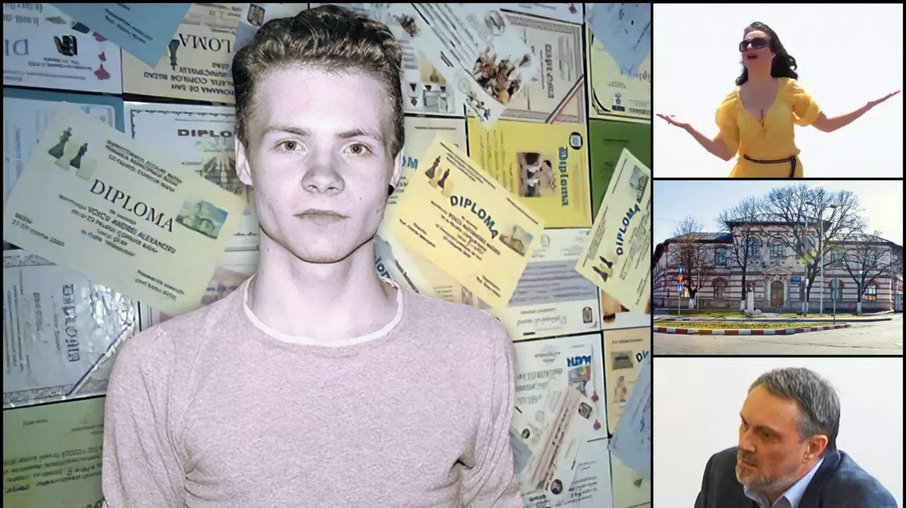

Întâmplări neobișnuite, controverse și cazuri incredibile care au captat atenția întregii țări.
Unul dintre cele mai bizare și discutate scandaluri din sistemul de învățământ românesc a avut în centru un elev de clasa a XI-a de la un profil umanist și o profesoară de educație plastică (desen).
Cazul a șocat opinia publică și a stârnit dezbateri aprinse legate de abuzul de putere și criteriile de notare aplicate la disciplinele vocaționale în cazul profilului uman.
Totul a început când profesoara le-a cerut elevilor să realizeze o lucrare grafică. Elevul a realizat un desen pe care cadrul didactic l-a considerat complet nepotrivit și o jignire gravă adusă propriei persoane, interpretându-l ca pe o manifestare de indisciplină extremă.
